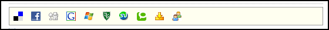

Configuring Advanced Settings for the Blog Module
How to configure the Advanced Settings for the View_Blog module.
- Select Module Options from the View_Blog module actions menu.
- Go to the Advanced Settings section.
- At Allow Multiple Categories, to enable bloggers to associate posts with more than one category - OR - to disable.
- At Allow Upload Options, to enable bloggers to upload files such as attachments and images to their blog - OR - to disable.
- At Personal Blog Page, select the required blog name. See "Creating a Personal Blog Page"
- At Enable DNN Search, to enable the DNN Search module to index all blog entries - OR - to disable DNN Search. Tip: DNN Search includes both the [SEARCH] skin token and the search module. Warning. If you enable this option, please ensure you only enable this option on one module (your main blog page). If you enable this option for more than one module search results will be duplicated.
- At Enable Social Bookmarks, to display the social bookmarks toolbar - OR - to disable them. The toolbar is displayed beneath a blog entry when comments are being viewed.

- At Enforce Entry Summary Limit, to force both the auto-generated and actual entry summaries to be truncated based on the value entered in the 'Limit Entry Summary To' setting - OR - to disable.
- At Include Summary In Entry, to include the summary of each blog displays below the blog title when the user clicks View All Recent Entries link on the Blog_List module - OR - to hide summary.
- At Allow Summary HTML, enable HTML markup to be used in the summary field - OR - to disable HTML markup.
- At Allow Child Blogs, to allow child blogs to be created - OR - to disable child blogs. Note: Child blogs were superseded by categories from Blog (04.00.00+), therefore you may choose to disable child blogs and manage blogs solely using categories.
- At Use Drop Down List For Archive, to display the list of archived months as a drop down list instead of the default data list.